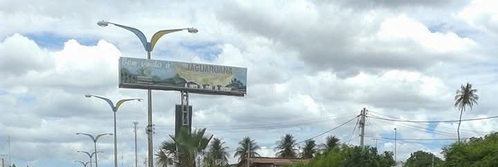
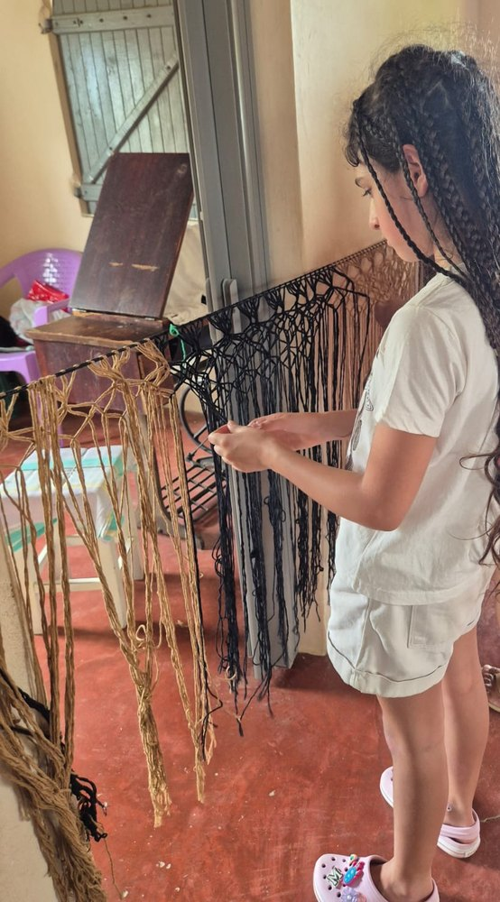

Em construção. Esta fase será ampliada à medida que eu gravar novos relatos.
Só voltei para conhecer o lugar onde nasci aos 45 anos, por graça de Deus. Foi uma viagem pensada para os outros: levei minha mãe e a tia Socorro para que revissem o lugar onde nasceram e reencontrassem o irmão querido, o tio João, depois de mais de quarenta anos separados. A tia Socorro, eu perdi pouco tempo depois. Havia outras escolhas a fazer, mas a minha era fazer todos felizes.
Eu não lembrava de nada, porque saí de lá muito pequena. Na entrada da cidade, vi um umbral com a frase: Terra da Rede de Dormir. Eu achava o máximo. Saber que eu vinha dali tinha uma importância enorme para mim.

Três anos depois, fui atrás do meu pai, Gedeão, e o encontrei com saúde, em Fortaleza. Ganhei uma nova família no Ceará, com irmãos, sobrinhos, tios e primos, que se tornaram também família dos meus irmãos de Boa Vista. Foi dele que ganhei o Lucena que hoje faz parte do meu nome. Mas essa é uma história para contar depois, devagarzinho.
Na mesma época, levei meus filhos para conhecer o lugar de onde eu vim, junto com parentes de Fortaleza e de Boa Vista. Ao pisar de novo naquele chão e ver onde ficava a casinha da família, reencontrei minhas raízes. Desde então, volto todos os anos, e já levei quase toda a família, para que todos conheçam a terra de onde veio a bisavó. Muitos hoje voltam por conta própria.
Quando caminho por Jaguaruana, vejo minha avó em cada canto: na entrada da cidade, segurando a mão de uma menina chamada Luciana; à beira do rio onde as mulheres da família lavavam roupa. Como disse um dia meu primo Dude: “Eu saí do sertão, mas o sertão não saiu de mim.” Se eu pudesse escolher, moraria lá e em Roraima ao mesmo tempo.

Em casa, a Mariah tenta ensinar a bisavó, minha mãe, a ler. Eu me divirto com a cena e respondo por ela: “Não dá mais, minha filha, a vovó já está cansada.”
Em 2018, como acadêmica de Psicologia da Universidade Federal de Roraima, escrevi o conto O que eu conto de mim, ponto de partida desta autobiografia. Minha família hoje é maior do que a do conto. Meu filho, Raphael, construiu uma linda família e me deu dois netos amados, Henrique e Isabela, que, junto com a Mariah, minha primeira netinha, filha da Thalita, são a razão do meu viver.
Às vésperas do Dia das Crianças de 2026, chorei numa loja comprando brinquedos para a criançada da família. Pensei primeiro na criança que eu fui, entre os 6 e os 12 anos, que ganhava pedaços de brinquedo, bonequinhas simples com um fio de cabelo só, uma fralda plástica e uma chupetinha na boca, e como eu era feliz com isso. Tudo me alegrava. Deus me deu de presente um coração grato. E eu nem imaginava que um dia teria condições de dar presentes para toda a nossa criançada. As lágrimas escorrendo, o povo na fila sem entender. A história se passava dentro de mim. Na loja tocava Se enamora, do Balão Mágico, e as vozinhas dos cantores foram lá no fundo do meu coração. Meus sonhos, Deus realizou um monte. Ainda tenho vários a realizar, conforme a vontade Dele. Dizem que, enquanto sonhamos, temos uma vida a seguir.
Existe ainda na minha vida um anjo protetor: minha prima Leda, que todos chamam de Tetê. Ela chegou na minha vida aos 8 anos e nunca mais me deixou. Se existe prova de amor maior por mim no mundo, a primeira é a de Deus; a segunda, eu creio, é o amor da Tetê. Ela seria capaz de dar a vida por mim, e eu por ela. Como uma pessoa pode me amar tanto e eu não retribuir todo esse amor? Eu teria um coração duro.